Unit 1
Introduction and the Entity-Relationship model
Introduction
1) Define: Data, Database, DBMS, Data Redundancy.
- Data: Raw, unprocessed facts and figures (numbers, text, images, etc.) that have no meaning on their own. Example: 101, "Ravi", 85.
- Database: An organised collection of related data, stored electronically so that it can be easily accessed, managed and updated. Example: a university database storing students, courses and marks.
- DBMS (Database Management System): A software system that allows users to define, create, store, retrieve, update and control a database. It acts as an interface between the database and its users or application programs. Examples: MySQL, Oracle, SQL Server, PostgreSQL.
- Data Redundancy: The unnecessary duplication of the same data at multiple places. It wastes storage, and can lead to inconsistency when one copy is updated and the others are not.
2) Explain the purpose of the database system.
Earlier, organisations stored data in separate file-processing systems (flat files). These systems had many problems. The database system was developed to overcome them. Its main purposes are:
- Reduce data redundancy and inconsistency by storing each fact once.
- Avoid data isolation: data kept in one central place instead of scattered files with different formats.
- Easy data access: queries can be answered quickly using a query language such as SQL.
- Integrity: constraints (e.g. marks between 0 and 100) are enforced centrally.
- Atomicity of updates: a transaction is either completed fully or not at all (e.g. fund transfer).
- Concurrent access: many users can use the data at the same time without conflicts.
- Security: only authorised users can access specific data.
- Backup and recovery after failures.
3) Explain the purpose and application of DBMS.
Purpose of DBMS
- To store large volumes of data in an organised way.
- To provide efficient and convenient retrieval and modification of data.
- To control redundancy, maintain integrity and ensure consistency.
- To provide security, concurrency control, and backup/recovery.
- To provide data independence between programs and data.
Applications of DBMS
| Area | Use of DBMS |
|---|---|
| Banking | Customer details, accounts, loans, transactions |
| Airlines / Railways | Reservations, schedules, ticketing |
| Universities | Student registration, courses, grades, exams |
| Telecommunications | Call records, monthly bills, balances |
| Finance | Stocks, bonds, sales and purchases |
| Sales / E-commerce | Customers, products, orders, payments |
| Manufacturing | Inventory, supply chain, production |
| Human Resources | Employee records, salaries, payroll, tax |
| Healthcare | Patient records, doctors, prescriptions, reports |
4) List the benefits of database approach.
- Controlled redundancy: duplication is minimised.
- Data consistency: a single update reflects everywhere.
- Data sharing: multiple users and applications share the same data.
- Data integrity: rules and constraints keep data accurate.
- Security: access rights restrict unauthorised use.
- Data independence: changing storage structure does not affect programs.
- Concurrent access: multi-user environment supported.
- Backup and recovery: data restored after system failure.
- Standards enforcement: uniform naming and formats across the organisation.
- Reduced application development time and improved decision making.
5) Describe various disadvantages of file system compared to Database Management System.
- Data redundancy and inconsistency: the same data is stored in many files; changes in one file may not be made in others.
- Difficulty in accessing data: every new query requires a new application program to be written.
- Data isolation: data is scattered in files of different formats, making it hard to retrieve.
- Integrity problems: constraints are buried in program code; adding new constraints means changing programs.
- Atomicity problems: if a system fails midway through an operation (e.g. transfer of money), the data may be left in an inconsistent state.
- Concurrent access anomalies: two users updating the same data simultaneously can produce wrong results.
- Security problems: it is hard to give different users different access rights.
- No data independence: programs depend on the physical file structure.
6) Discuss disadvantages of file processing systems and advantages of DBMS (differentiate it).
| Basis | File Processing System | DBMS |
|---|---|---|
| Redundancy | High; same data repeated in many files | Controlled; data stored once |
| Consistency | Inconsistent copies are common | Consistency maintained |
| Data access | New program needed for each query | Ad-hoc queries using SQL |
| Data sharing | Difficult; files are application specific | Easy; shared by many users |
| Integrity | Constraints coded in programs | Constraints defined in the database |
| Security | Weak, file-level only | Strong; user-level authorisation |
| Concurrency | Not supported properly | Supported through locks / transactions |
| Recovery | Manual backup, poor recovery | Automatic backup and recovery |
| Data independence | Absent | Present (physical and logical) |
| Cost | Cheaper, simple | Costly software and hardware |
| Complexity | Simple to understand | Complex design and administration |
Conclusion
A DBMS removes the major drawbacks of file systems (redundancy, inconsistency, poor security and concurrency) and is preferred for medium and large applications. File systems may still be used for very small, simple applications.
7) Explain different database users.
Database users are classified according to how they interact with the system:
- Naive (parametric) users: unsophisticated users who interact through ready-made application interfaces, without knowing about the DBMS. Examples: bank tellers, ATM users, railway reservation clerks, online shoppers.
- Application programmers: computer professionals who write application programs using languages such as Java, Python or C++ with embedded SQL, to build the interfaces used by naive users.
- Sophisticated users: engineers, scientists and analysts who write their own queries directly in a query language (SQL) without writing programs. Example: a data analyst running OLAP queries.
- Specialised users: write specialised database applications that do not fit the traditional data-processing framework, such as CAD, expert systems, and multimedia databases.
- Database Administrator (DBA): the person with central control over the database and DBMS (see next questions).
8) What are the responsibilities of a DBA?
The Database Administrator (DBA) is the person who has central control over both the data and the programs that access it. Responsibilities:
- Designing the logical and physical structure of the database (schema definition).
- Deciding the storage structure and access methods.
- Granting authorisation and controlling user access (security).
- Taking regular backups and planning recovery from failure.
- Monitoring performance and tuning the database.
- Ensuring data integrity and consistency.
- Modifying the schema and physical organisation when requirements change.
- Installing, upgrading and maintaining DBMS software.
- Routine maintenance such as freeing disk space and checking free space.
9) List the major functions performed by DBA.
- Schema definition: creating the original database schema using DDL.
- Storage structure and access-method definition.
- Schema and physical-organisation modification.
- Granting of authorisation for data access.
- Routine maintenance: periodic backup, ensuring enough free disk space, monitoring jobs and performance.
- Security enforcement and user management.
- Backup and recovery management.
10) What is schema and instance? Explain with example.
Schema: The overall logical design or structure of the database. It describes tables, attributes, data types and relationships. It is specified at design time and changes rarely. It is also called the intension (or skeleton) of the database.
Instance: The actual data stored in the database at a particular moment in time. It changes frequently as data is inserted, updated or deleted. It is also called the extension or database state.
Example
STUDENT(Roll_no, Name, Course, Semester) <- SCHEMA| Roll_no | Name | Course | Semester |
|---|---|---|---|
| 101 | Ravi | BCA | 3 |
| 102 | Meena | BCA | 3 |
The table above, with its two rows, is an instance of the STUDENT schema. If a new row is added, the instance changes, but the schema stays the same.
| Schema | Instance |
|---|---|
| Design / structure of the database | Data present at a given time |
| Rarely changes | Changes frequently |
| Defined using DDL | Modified using DML |
| Like a class / variable declaration | Like an object / variable value |
11) Explain three level architecture of database system.
The three-schema architecture (ANSI-SPARC) separates the user's view of data from its physical storage. It has three levels:
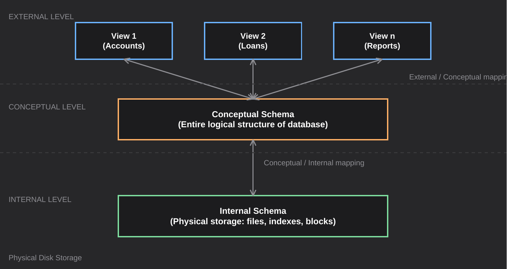
- External level (View level): the highest level. It describes only the part of the database relevant to a particular user group. Many different views can exist. It hides the rest of the data and adds security.
- Conceptual level (Logical level): describes what data is stored and the relationships among the data for the entire community of users. It hides storage details. The DBA works at this level.
- Internal level (Physical level): the lowest level. It describes how data is physically stored on disk: file organisation, indexes, record placement, compression.
Mappings
- External/Conceptual mapping: converts a user's view into the conceptual schema.
- Conceptual/Internal mapping: converts the conceptual schema into physical storage structures.
Advantage: it provides data independence, since a change at one level does not affect the level above.
12) Explain three levels of data abstraction in DBMS.
Data abstraction means hiding complex storage details from users and showing only the necessary information. DBMS provides three levels:
| Level | Description | Example (Student database) |
|---|---|---|
| Physical level | Lowest level. Describes how data is actually stored (blocks, files, indexes). Seen by DBA / system programmers. | Student records stored as blocks of bytes on disk with a B-tree index on Roll_no. |
| Logical level | Describes what data is stored and relationships among them. Used by DBA and programmers. | Table STUDENT(Roll_no int, Name varchar(30), Course varchar(10)). |
| View level | Highest level. Describes only part of the database for a user. Hides complexity. | A faculty view shows only Name and Course; marks and fees are hidden. |
The three levels give a simple, secure and flexible way to interact with a database, regardless of its internal complexity.
13) What is data independence? Explain the difference between physical and logical data independence with example.
Data independence is the ability to modify the schema at one level of the database system without having to change the schema at the next higher level. It is achieved through the three-level architecture.
1. Physical Data Independence
The ability to change the internal (physical) schema without changing the conceptual schema or application programs. Example: changing a file organisation from sequential to indexed, moving data to a new disk, or adding an index does not require any change to the table definitions or application programs.
2. Logical Data Independence
The ability to change the conceptual (logical) schema without changing external schemas or application programs. Example: adding a new column Email to the STUDENT table, or splitting a table, should not affect existing user views or programs that do not use it.
| Physical Data Independence | Logical Data Independence |
|---|---|
| Change at internal level does not affect conceptual level | Change at conceptual level does not affect external level |
| Easier to achieve | Harder to achieve |
| Concerned with storage, files, indexes | Concerned with tables, attributes, relationships |
| Example: changing from heap file to index file | Example: adding or deleting an attribute |
| Mapping: conceptual / internal | Mapping: external / conceptual |
14) Explain database system architecture with diagram in detail.
A database system is partitioned into modules that deal with each of its responsibilities. The main components are the users, the query processor, the storage manager and the disk storage.
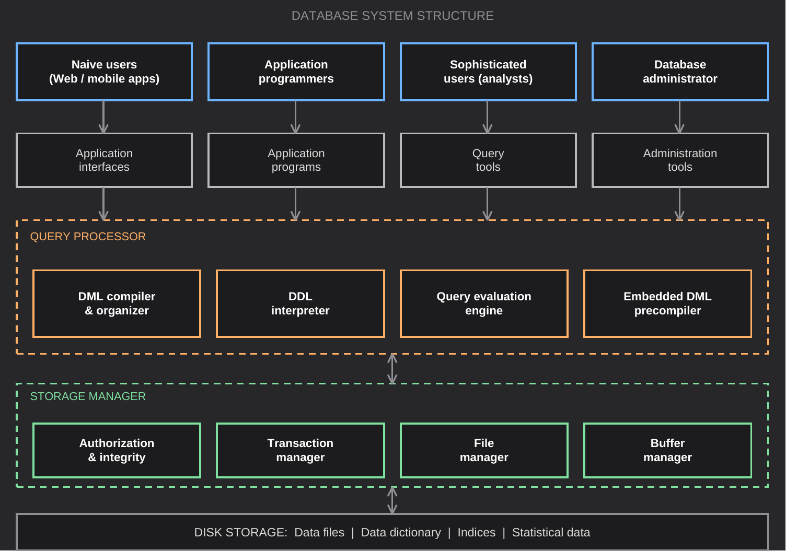
A. Query Processor
- DDL interpreter: interprets DDL statements and records definitions in the data dictionary.
- DML compiler: translates DML statements into an evaluation plan of low-level instructions, and performs query optimisation to choose the cheapest plan.
- Query evaluation engine: executes the low-level instructions generated by the DML compiler.
- Embedded DML precompiler: converts DML statements embedded in application programs into normal procedure calls.
B. Storage Manager
It is the interface between the low-level data stored on disk and the application programs and queries. Components:
- Authorisation and integrity manager: checks integrity constraints and user authority.
- Transaction manager: ensures the database remains consistent despite failures and that concurrent transactions do not conflict.
- File manager: manages allocation of disk space and the data structures used to represent information on disk.
- Buffer manager: fetches data from disk into main memory and decides what to keep in memory (cache).
C. Disk Storage (Data structures)
- Data files: store the database itself.
- Data dictionary: stores metadata (schema information).
- Indices: provide fast access to data items.
- Statistical data: used by the query optimiser.
15) Explain database system 3 tier architecture with diagram in detail.
In a three-tier architecture, the client does not directly communicate with the database. Instead, the client machine acts as a front end and an application server sits in between. It is widely used for web-based applications.
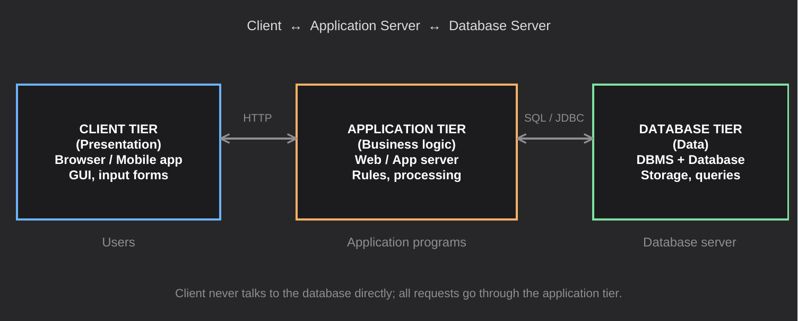
- Presentation tier (client): the user interface (web browser or mobile app). It takes user input and displays results. It has no direct access to the database.
- Application / Business-logic tier: the middle layer. It contains business rules and processing logic, validates requests, and communicates with both client and database. Examples: Tomcat, Node.js, Django servers.
- Data tier (database server): the DBMS that stores, retrieves and manages data (MySQL, Oracle). It receives SQL requests only from the application tier.
Advantages
- Better security, since the client never accesses the database directly.
- Scalability: each tier can be scaled independently.
- Easier maintenance: changes in business logic do not affect the client or database.
- Reusability and better integrity because business rules are centralised.
Disadvantages
- More complex to design and deploy than two-tier.
- Slightly more communication overhead between tiers.
Two-tier vs three-tier: in two-tier the client talks directly to the database server (e.g. client-server applications using ODBC/JDBC); in three-tier an application server is placed in between.
Entity-Relationship model
1) What is Entity-Relationship model? Explain the steps to reduce the ER diagram to ER database schema.
The Entity-Relationship (E-R) model is a high-level conceptual data model proposed by Peter Chen (1976). It represents the real world as a collection of entities (objects), their attributes (properties) and the relationships among them. The result is drawn as an E-R diagram, which is easy to understand for both designers and users, and can be converted into a relational schema.
Main components
- Entity: a real-world object that is distinguishable from others (Student, Book).
- Attribute: a property that describes an entity (Name, Roll_no).
- Relationship: an association among two or more entities (Student enrolls in Course).
Steps to reduce an E-R diagram to relational schema (tables)
| Step | Rule | Example |
|---|---|---|
| 1. Strong entity set | Create one table. Simple attributes become columns. Primary key is the key attribute. | STUDENT(Roll_no, Name, DOB) |
| 2. Composite attribute | Include only the component (sub) attributes as columns. | Name → First_name, Last_name |
| 3. Multivalued attribute | Create a separate table with the primary key of the entity and the attribute. Both together form the key. | STUDENT_PHONE(Roll_no, Phone_no) |
| 4. Derived attribute | Not stored; it is computed when needed. | Age is computed from DOB |
| 5. Weak entity set | Create a table that contains the weak entity's attributes plus the primary key of the owner (strong) entity. Key = owner key + partial key. | PAYMENT(Loan_no, Pay_no, Date, Amount) |
| 6. Relationship 1:1 | Add the primary key of one side as a foreign key in the other (prefer the side with total participation). | Person(.., Passport_no) |
| 7. Relationship 1:N | Add the primary key of the '1' side as a foreign key in the 'N' side table. | STUDENT(.., Class_id) |
| 8. Relationship M:N | Create a new table containing the primary keys of both entities (as foreign keys) plus relationship attributes. Key = combination of both. | ENROLLS(Roll_no, Course_id, Grade) |
| 9. Specialization / generalization | Either one table for the super-class and one per sub-class (sub-class tables carry the super-class key), or tables only for sub-classes holding all attributes. | ACCOUNT, SAVINGS(Acc_no, rate) |
| 10. Aggregation | Create a table for the relationship which contains the primary key of the aggregated relationship and of the other entity. | MANAGES(Emp_id, Proj_id, Mgr_id) |
2) What is mapping cardinalities? Explain it with real time examples.
Mapping cardinality (cardinality ratio) expresses the number of entities of one entity set that can be associated with entities of another entity set through a relationship set. It is most useful for binary relationships.
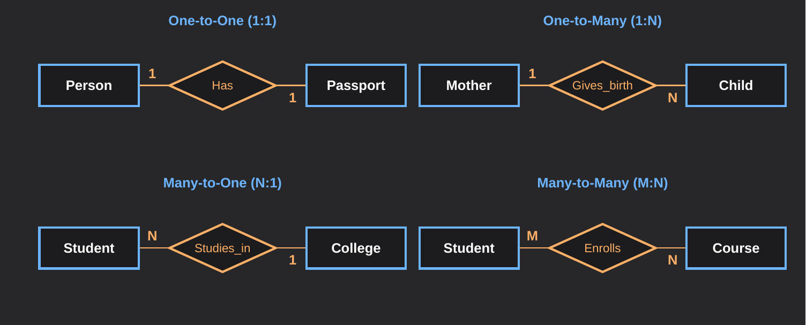
| Type | Meaning | Real-time example |
|---|---|---|
| One-to-One (1:1) | An entity in A is associated with at most one entity in B, and vice versa. | A person has one passport; a country has one capital city. |
| One-to-Many (1:N) | An entity in A can be associated with many entities in B, but an entity in B is associated with at most one in A. | A mother has many children; a department has many employees; a customer places many orders. |
| Many-to-One (N:1) | Many entities in A are associated with at most one entity in B. | Many students study in one college; many employees work in one branch. |
| Many-to-Many (M:N) | An entity in A can be associated with many in B and vice versa. | Students enrol in many courses and each course has many students; authors write many books and a book may have many authors. |
3) Explain types of attribute with example.
An attribute is a property or characteristic of an entity. Each attribute has a domain (set of permitted values).
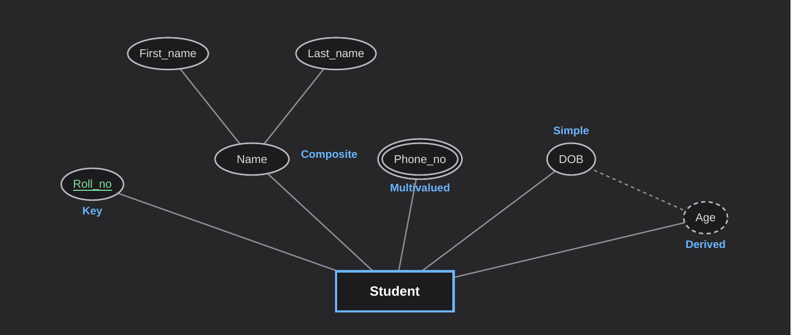
- Simple (atomic) attribute: cannot be divided further. Example: Roll_no, Age, Salary.
- Composite attribute: can be divided into smaller sub-parts with independent meaning. Example: Name → First_name, Middle_name, Last_name; Address → Street, City, Pin.
- Single-valued attribute: has only one value for an entity. Example: Roll_no, DOB.
- Multivalued attribute: can hold more than one value for one entity. Drawn as a double ellipse. Example: Phone_no, Email_id, Skills.
- Derived attribute: its value is calculated from other attributes; drawn with a dashed ellipse. Example: Age derived from Date_of_birth.
- Key attribute: uniquely identifies each entity; its name is underlined. Example: Roll_no.
- Null attribute: an attribute whose value is unknown or not applicable (e.g. Middle_name, Apartment_no).
4) Explain Specialization feature of ER diagram with example.
Specialization is a top-down design process in which a higher-level entity set is divided into lower-level entity sets that are distinguished by some characteristic. The lower-level entities inherit all attributes and relationships of the higher-level entity and also have their own extra attributes.
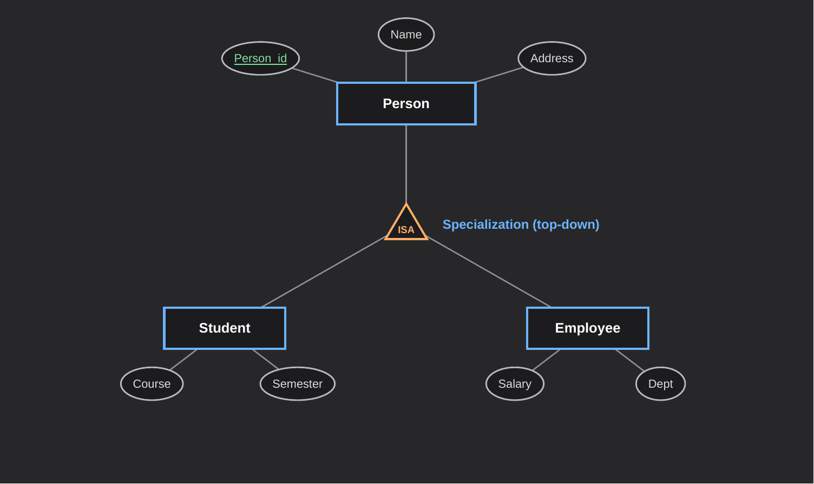
- Represented by a triangle labelled ISA ("is a") pointing toward the higher-level entity.
- Example: PERSON(Person_id, Name, Address) is specialized into STUDENT(Course, Semester) and EMPLOYEE(Salary, Dept). A student is a person.
- Constraints: disjoint (an entity belongs to at most one lower set) or overlapping (can belong to many); total (every higher-level entity must belong to a lower set) or partial.
- Purpose: to show differences among entities within a set, and to avoid null values in attributes that apply only to some entities.
5) Explain Generalization feature of E-R Diagram.
Generalization is a bottom-up design process. Several lower-level entity sets that share common features are combined into a higher-level entity set. It is the reverse of specialization.
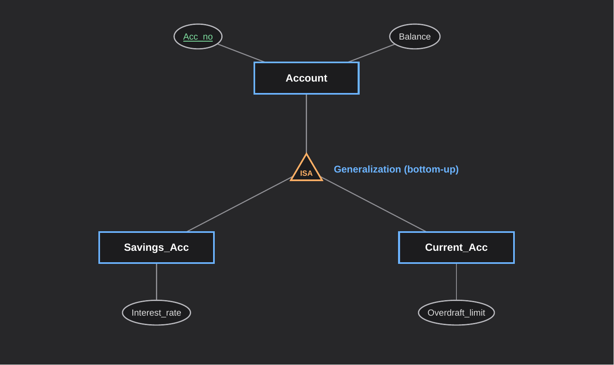
- The common attributes (Acc_no, Balance) are moved up to the higher-level entity ACCOUNT. Unique attributes (Interest_rate, Overdraft_limit) stay with the lower-level entities.
- Shown with the same ISA triangle as specialization.
- Example: CAR and TRUCK both have Reg_no, Owner, Colour; they are generalized as VEHICLE.
- Purpose: to emphasise similarities, remove duplication of attributes and make the schema simpler.
| Specialization | Generalization |
|---|---|
| Top-down approach | Bottom-up approach |
| Starts from one entity and divides it into sub-entities | Starts from many entities and merges them into one |
| Highlights differences | Highlights similarities |
| Adds new attributes in sub-entities | Moves common attributes into the super-entity |
6) Explain aggregation operation of ER diagram.
A limitation of the basic E-R model is that it cannot express a relationship among relationships. Aggregation is an abstraction in which a relationship set (together with the entities it relates) is treated as a single higher-level entity, so that it can take part in another relationship.
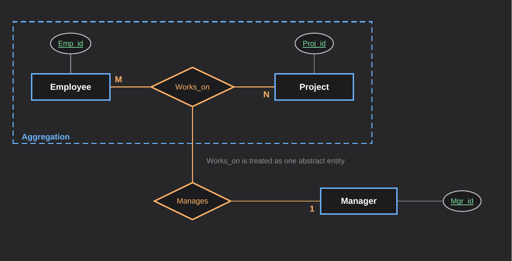
- Represented by drawing a dashed box around the relationship and the entities it connects.
- Example: An employee works on a project (Works_on). A manager manages each such (employee, project) combination. Since Manages is a relationship between a Manager and the relationship Works_on, we aggregate Works_on into one abstract entity.
- Why not a ternary relationship? Some (employee, project) pairs may have no manager. Aggregation avoids redundancy and keeps Works_on and Manages independent.
- On conversion to tables, MANAGES contains the primary key of the Works_on relationship (Emp_id, Proj_id) plus Mgr_id.
7) Draw an ER diagram for exam system of INDUS UNIVERSITY.
Entities: Student, Subject, Exam, Faculty, Result. Relationships: Appears_in, Conducted_for, Invigilates, Gets, Of.
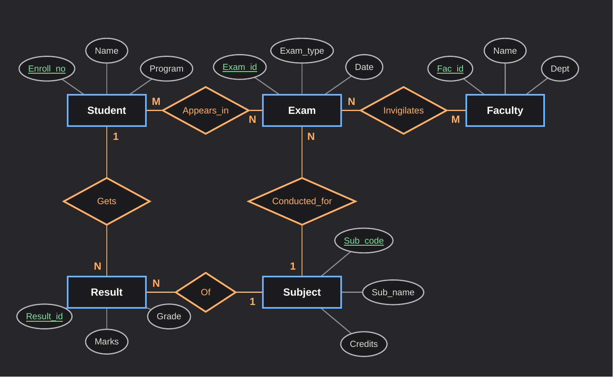
- A Student appears in many exams and an Exam is attended by many students (M:N).
- Each exam is conducted for one Subject, while a subject can have many exams (N:1).
- Many Faculty members invigilate an exam and a faculty member invigilates many exams (M:N).
- A student gets many Results, each result belongs to one student (1:N); each result is of one subject (N:1).
Relational schema
STUDENT(Enroll_no, Name, Program)
SUBJECT(Sub_code, Sub_name, Credits)
EXAM(Exam_id, Exam_type, Date, Sub_code*)
FACULTY(Fac_id, Name, Dept)
RESULT(Result_id, Marks, Grade, Enroll_no*, Sub_code*)
APPEARS_IN(Enroll_no*, Exam_id*)
INVIGILATES(Fac_id*, Exam_id*)8) Construct E-R diagram for a hospital with a set of patients and medical doctors. Associate with each patient a log of various tests and examinations conducted.
Entities: Doctor, Patient, and Test_Log. Test_Log is a weak entity since a test record has no meaning without the patient it belongs to. It depends on Patient through the identifying relationship Undergoes.
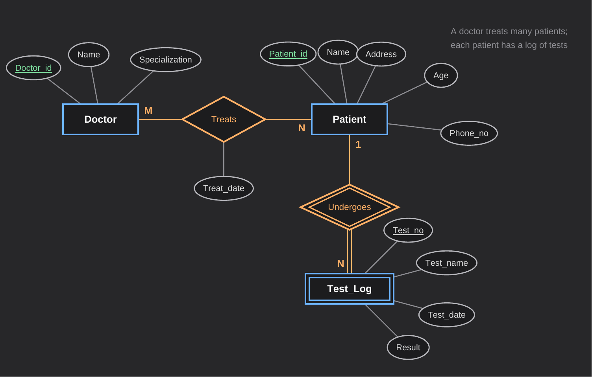
- Doctor - Treats - Patient: M:N (a doctor treats many patients; a patient may be treated by many doctors). Relationship attribute: Treat_date.
- Patient - Undergoes - Test_Log: 1:N, with total participation of Test_Log (double line).
- Key attributes: Doctor_id, Patient_id. Test_Log has partial key Test_no; its full key is Patient_id + Test_no.
- Phone_no could be multivalued; Age is derived from date of birth.
9) Construct E-R diagram of the bank. It provides different kinds of bank accounts and loans. It operates number of branches.
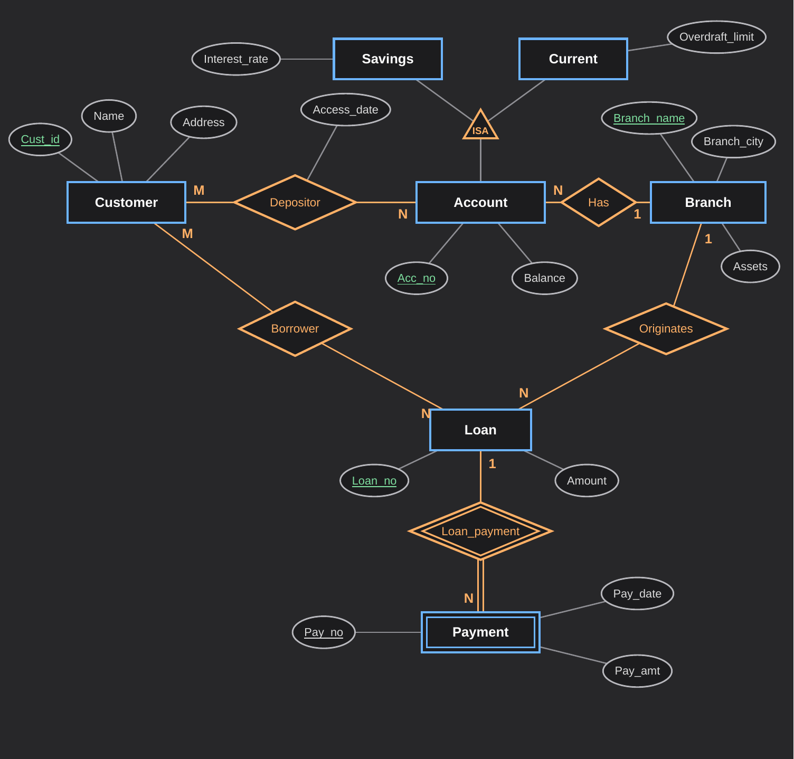
- Entities: Customer, Account (specialized into Savings and Current), Loan, Branch, and the weak entity Payment.
- Depositor (Customer - Account): M:N, with attribute Access_date.
- Borrower (Customer - Loan): M:N.
- Has (Branch - Account): 1:N; Originates (Branch - Loan): 1:N. The bank operates many branches.
- Loan_payment (Loan - Payment): 1:N identifying relationship; Payment is a weak entity with partial key Pay_no.
- Account is specialized by ISA into SAVINGS (Interest_rate) and CURRENT (Overdraft_limit) accounts.
10) Draw E-R Diagram for the School Management System.
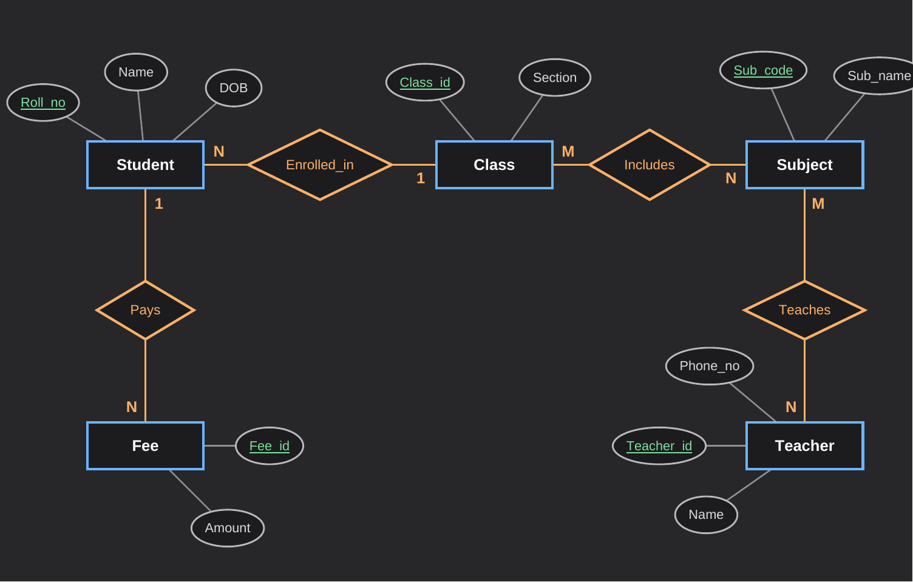
- Student - Enrolled_in - Class: N:1 (many students are in one class).
- Class - Includes - Subject: M:N (a class studies many subjects; a subject is taught to many classes).
- Teacher - Teaches - Subject: N:M (a teacher teaches many subjects and a subject may be taught by many teachers).
- Student - Pays - Fee: 1:N (a student pays many fee instalments).
- Keys: Roll_no, Class_id, Sub_code, Teacher_id, Fee_id.
11) Give symbols used in E-R Diagram and Draw the E-R diagram of Library Management System.
Symbols used in E-R diagram
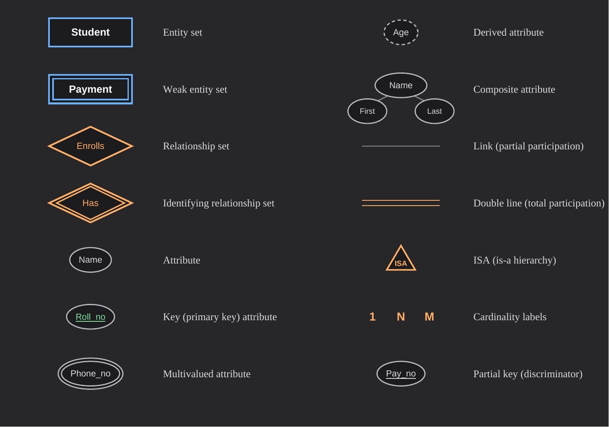
E-R diagram of Library Management System
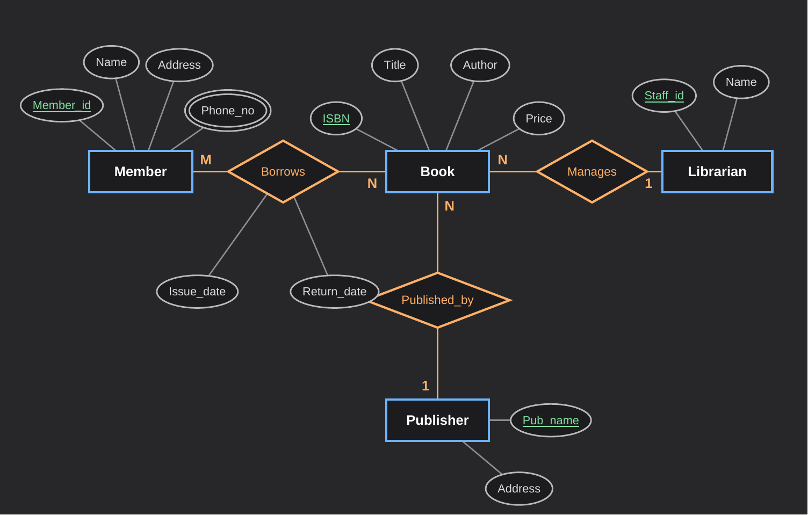
- Member - Borrows - Book: M:N with attributes Issue_date and Return_date.
- Book - Published_by - Publisher: N:1.
- Librarian - Manages - Book: 1:N.
- Keys: Member_id, ISBN, Staff_id, Pub_name. Phone_no is multivalued.
12) Draw E-R diagram for supplier who supplies different parts. The parts are used in different projects. Explain the mapping cardinality used. Assume suitable attributes.
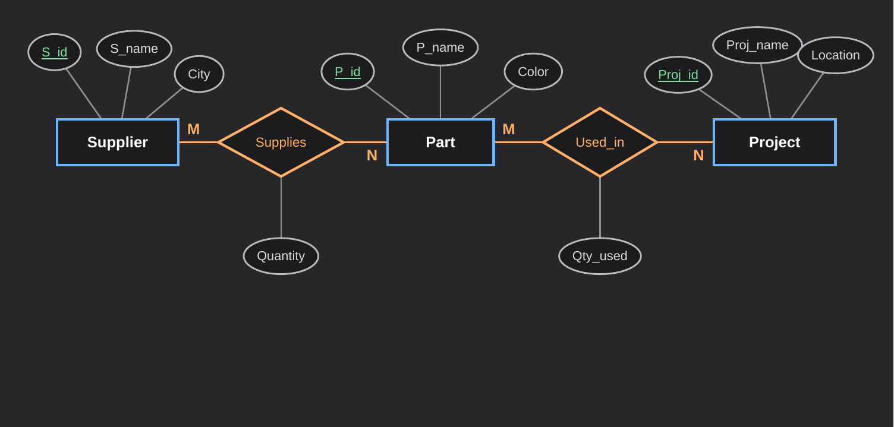
Mapping cardinalities used
- Supplier - Supplies - Part: Many-to-Many (M:N). One supplier can supply many different parts, and one part can be supplied by many suppliers. The relationship attribute is Quantity.
- Part - Used_in - Project: Many-to-Many (M:N). One part can be used in many projects, and one project uses many parts. The relationship attribute is Qty_used.
- Both M:N relationships become separate tables: SUPPLIES(S_id, P_id, Quantity) and USED_IN(P_id, Proj_id, Qty_used).
- Alternative: if the supplier, part and project must be linked together (which supplier supplied which part to which project), a single ternary relationship SUPPLY(S_id, P_id, Proj_id, Quantity) can be used.
13) Construct an E-R Diagram for an insurance company with a set of customers, each of whom owns number of cars, also each can have number of recorded accidents associated with it.
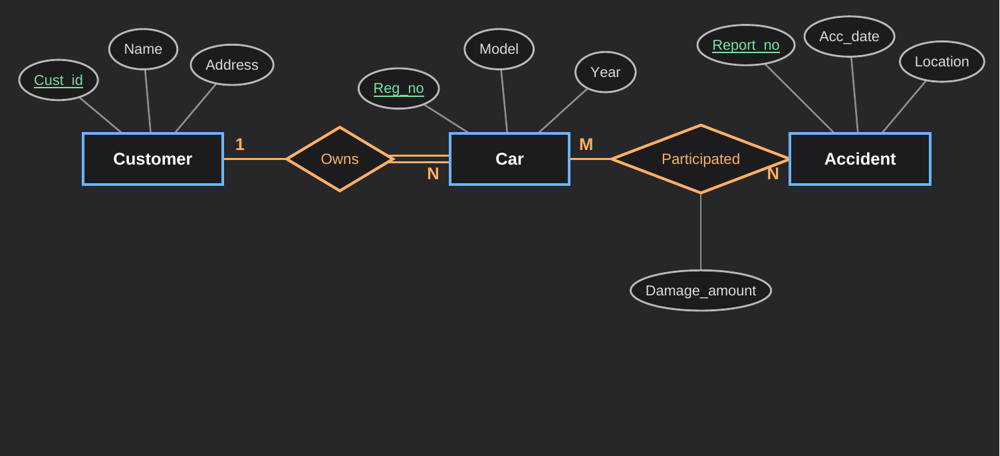
- Customer - Owns - Car: 1:N. A customer owns many cars; each car belongs to one customer (total participation of Car).
- Car - Participated - Accident: M:N, with attribute Damage_amount. A car can be involved in many recorded accidents and an accident can involve more than one car.
- Keys: Cust_id, Reg_no, Report_no.
Tables
CUSTOMER(Cust_id, Name, Address)
CAR(Reg_no, Model, Year, Cust_id*)
ACCIDENT(Report_no, Acc_date, Location)
PARTICIPATED(Reg_no*, Report_no*, Damage_amount)14) What is constraint in database? Explain types of constraints with suitable example.
Constraints are rules enforced on the data in a database to ensure its accuracy, validity and consistency. The DBMS rejects any insert, update or delete that violates a constraint.
Types of constraints
| Constraint | Description | Example |
|---|---|---|
| Domain constraint | Values of an attribute must come from its defined domain (data type, range). | Age INT CHECK (Age >= 0) |
| NOT NULL | Column cannot hold a NULL value. | Name VARCHAR(30) NOT NULL |
| UNIQUE | All values in the column must be different. | Email VARCHAR(50) UNIQUE |
| Key constraint (Primary key) | Uniquely identifies each row; cannot be NULL or duplicate. A table has only one. | Roll_no INT PRIMARY KEY |
| Entity integrity | No attribute of a primary key may be NULL. | Roll_no cannot be NULL |
| Referential integrity (Foreign key) | A foreign key value must match a primary key value in the referenced table, or be NULL. | Dept_id references DEPT(Dept_id) |
| CHECK | Restricts values using a condition. | Marks CHECK (Marks BETWEEN 0 AND 100) |
| DEFAULT | Provides a value when none is given. | City VARCHAR(20) DEFAULT 'Ahmedabad' |
Example
CREATE TABLE Student (
Roll_no INT PRIMARY KEY,
Name VARCHAR(30) NOT NULL,
Email VARCHAR(50) UNIQUE,
Marks INT CHECK (Marks BETWEEN 0 AND 100),
Dept_id INT,
FOREIGN KEY (Dept_id) REFERENCES Dept(Dept_id)
);Constraints in the E-R model
- Mapping cardinality constraints: 1:1, 1:N, N:1, M:N.
- Participation constraints: total (every entity must participate, double line) and partial (single line).
- Generalization constraints: disjoint / overlapping, total / partial.
15) Draw symbols for following in E-R diagram: (a) Weak Entity set, Derived attribute, Multivalued. (b) Relationship Set, and Primary key attribute.
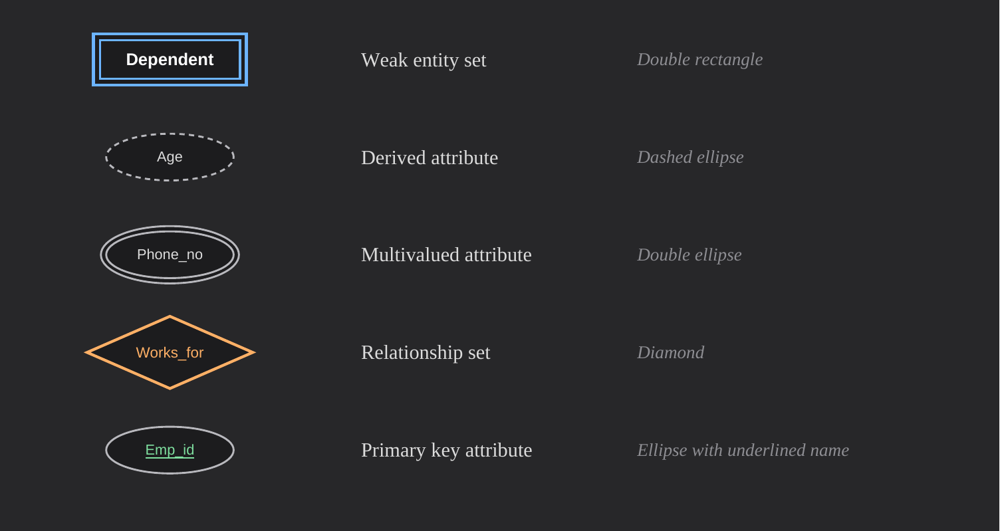
| Symbol | Notation | Meaning |
|---|---|---|
| Weak entity set | Double rectangle | Entity with no key of its own; depends on a strong (owner) entity. |
| Derived attribute | Dashed ellipse | Value is computed from other attributes (e.g. Age from DOB). |
| Multivalued attribute | Double ellipse | Can hold more than one value (e.g. Phone_no). |
| Relationship set | Diamond | Association among entity sets (e.g. Works_for). |
| Primary key attribute | Ellipse with underlined name | Uniquely identifies each entity in an entity set. |
Last updated on November 23, 2026